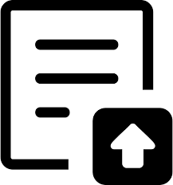

About
Model: BNRV520
Name: Barnes & Noble Nook GlowLight 3 eReader
Memory: 8GB
Setup
- Account - Enter email, name and country.
-
Settings:
-
Library Settings - Check:
- Additional Filters: Show Samples, Show Items in Shelves
- Enable Series Stacks: In All Titles, In Shelves
- Enable Author Stacks: When Sorting by Author
- Reader -> Page Key: Page Forward with BOTTOM BUTTONS
-
Download & Storage:
- Automatic Downloads: New Books, New Magazine Issues, New Newspaper Issues
- Storage: Automatically Move to Cloud, Automatically Archive Magazine And Newspapers
- About - Model, serial number, software versions and check for updates.
-
Library Settings - Check:
Local Book Load
- Connect the Nook to this laptop via a USB cable.
- Tap "Turn on" on the Nook
- Run \Src\sysdocs\generate\NookLoadLocal.bat
- Open "This PC"
- Right-click "NOOK (D:)" -> Eject
- Disconnect the Nook from this laptop.
Documentation
Nook Quick Start Guide
Nook Manual
NOOK GlowLight Plus - Sideloading
Rooting Glowlight
 Links
Links
How to Root and set up a new Nook Glowlight 3
NOOK Glowlight - Transfer Personal Files